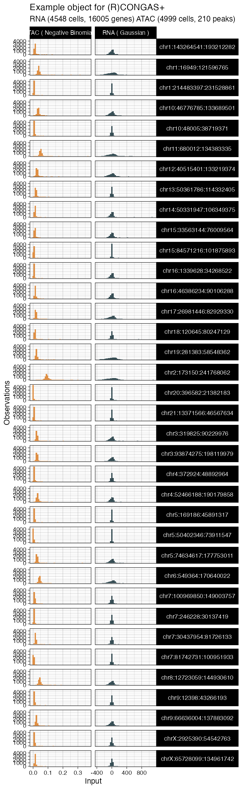
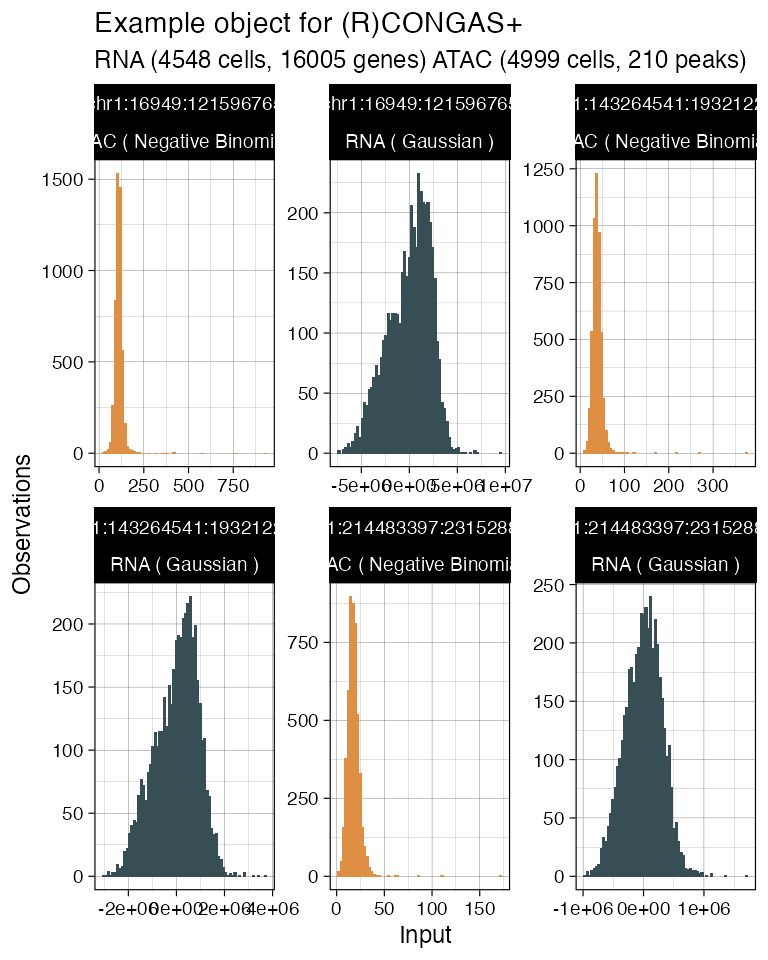
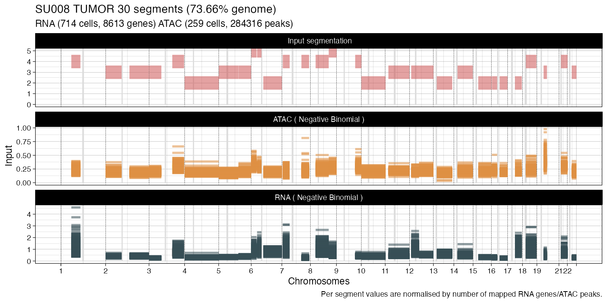
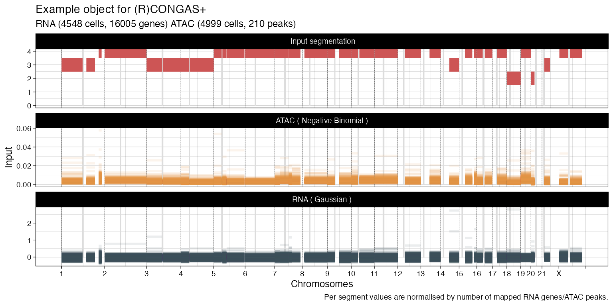
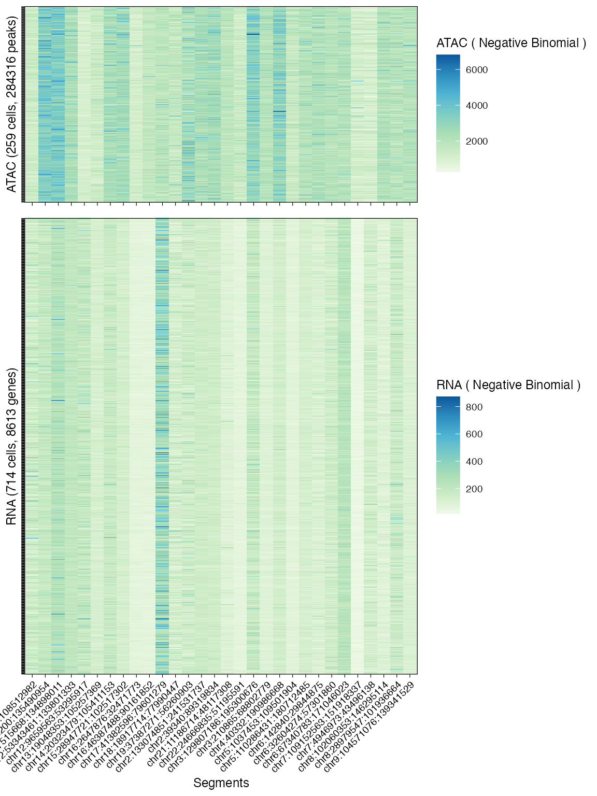
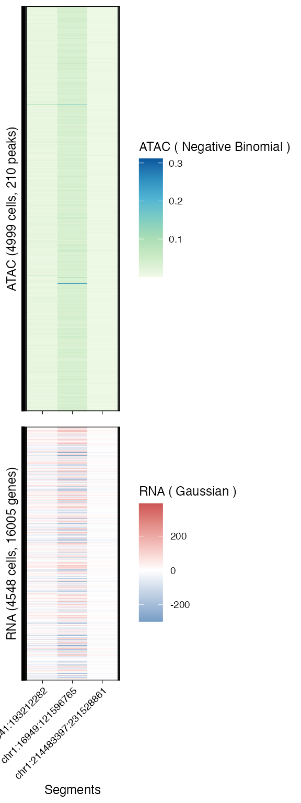
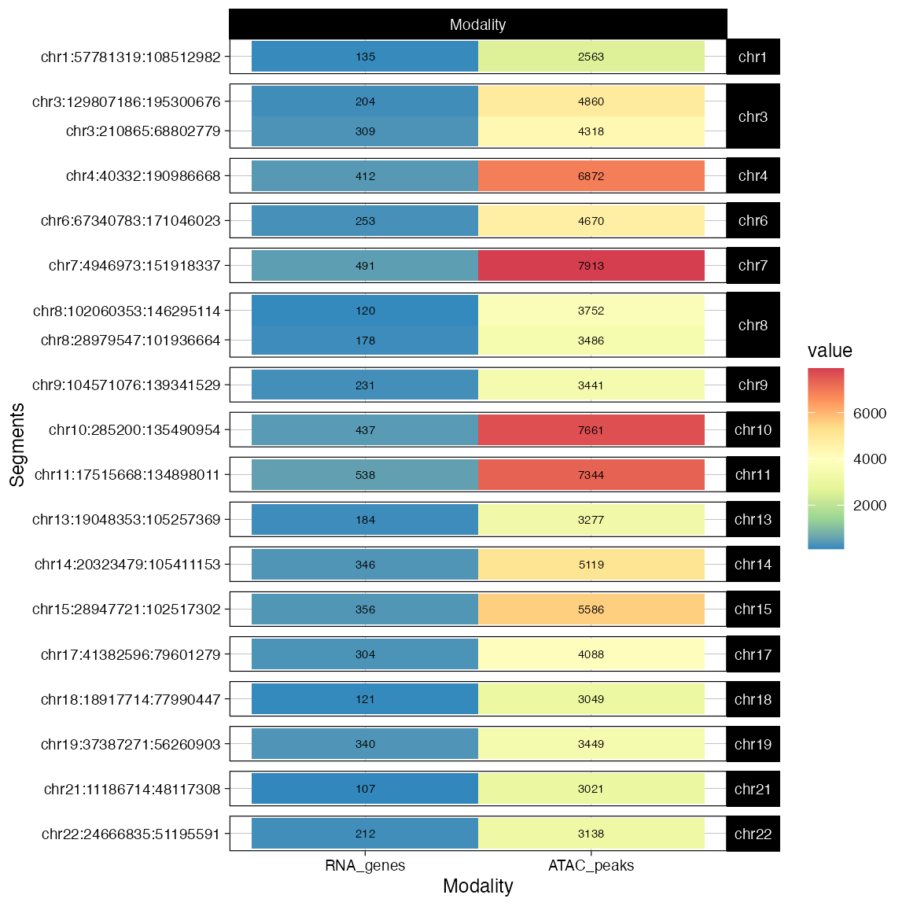

data('example_object')
print(example_object)
#> ── [ (R)CONGAS+ ] SU008 TUMOR 30 segments (73.66% genome) ──────────────────────
#>
#> ── CNA segments (reference: GRCh38)
#> → Input 30 CNA segments, mean ploidy 3.2.
#>
#> | | | | | | | | | | | | | | | | | | | |
#>
#> Ploidy: 0 1 2 3 4 5 *
#>
#> ── Modalities
#> → RNA: 714 cells with 8613 mapped genes, 1401728 non-zero values. Likelihood: Negative Binomial.
#> → ATAC: 259 cells with 284316 mapped peaks, 3083691 non-zero values. Likelihood: Negative Binomial.
#> ! Clusters: not available.
#>
#> ── LOG ──
#>
#> - 2021-03-30 17:58:41 Created input object.
#> - 2021-03-30 17:58:43 Filtered outliers: [6|0.05|0.95]
#> [1] 0The main plotting function for data is plot_data; this function calls a number of internal other plotting function, depending on its what parameter. Each one of the internal functions can take one or more parameters, most of them with defaults; parameters to these functions can be passed through the ellipssis ... argument of plot_data.
These are the internal functions and their named parameters
formals(Rcongas:::plot_data_histogram) %>% names()
#> [1] "x" "segments" "whichfacet"
formals(Rcongas:::plot_data_lineplot) %>% names()
#> [1] "x" "segments" "alpha"
formals(Rcongas:::plot_data_heatmap) %>% names()
#> [1] "x" "segments"
formals(Rcongas:::plot_data_mapping) %>% names()
#> [1] "x"For instance: calling
plot_data(x, what = "lineplot")will callRcongas:::plot_data_lineplot. So in that case you can change the default plotting behaviour using the parameters matching the formal arguments.
This shows input values per modality, split by segments, as histogram.
plot_data(example_object, what = 'histogram')
#> → Normalising RNA counts using input normalisation factors.
#> → Normalising ATAC counts using input normalisation factors.
Custom calling: the internal arguments are as follows (by default, all segments are plot)
formals(Rcongas:::plot_data_histogram)
#> $x
#>
#>
#> $segments
#> get_input(x, what = "segmentation") %>% pull(segment_id)
#>
#> $whichfacet
#> ggplot2::facet_wrapSo you can subset the function to plot, say, the first 3 segments in the data
which_segments = get_input(example_object, what = 'segmentation') %>%
filter(row_number() <= 3) %>%
pull(segment_id)
# Pass formal "segments"
plot_data(example_object, what = 'histogram', segments = which_segments)
#> → Normalising RNA counts using input normalisation factors.
#> → Normalising ATAC counts using input normalisation factors.
This function plot a per-segment line for every cell in the dataset, showing all modalities and the input segmentation
plot_data(example_object, what = 'lineplot')
#> → Normalising RNA counts using input normalisation factors.
#> → Normalising ATAC counts using input normalisation factors.
#> → Scaling RNA observed values by number of genes mapped per segment.
#> → Scaling ATAC observed values by number of peaks mapped per segment.
Custom calling: the internal arguments are as follows (by default, all segments are plot with no transparency)
formals(Rcongas:::plot_data_lineplot)
#> $x
#>
#>
#> $segments
#> get_input(x, what = "segmentation") %>% pull(segment_id)
#>
#> $alpha
#> [1] 1So you can add transparency to see where the mass of values concentrates.
# Pass formal "alpha"
plot_data(example_object, what = 'lineplot', alpha = 0.3)
#> → Normalising RNA counts using input normalisation factors.
#> → Normalising ATAC counts using input normalisation factors.
#> → Scaling RNA observed values by number of genes mapped per segment.
#> → Scaling ATAC observed values by number of peaks mapped per segment.
This function shows a view per cell, per segment, of the input values. This plot can be very large depending on the number of cells in the data
plot_data(example_object, what = 'heatmap')
#> → Normalising RNA counts using input normalisation factors.
#> → Normalising ATAC counts using input normalisation factors.
Custom calling: the internal arguments are as follows (by default, all segments are plot)
formals(Rcongas:::plot_data_histogram)
#> $x
#>
#>
#> $segments
#> get_input(x, what = "segmentation") %>% pull(segment_id)
#>
#> $whichfacet
#> ggplot2::facet_wrapSo you can subset the function to plot a custom set of segments (as above)
# Pass formal "segments"
plot_data(example_object, what = 'heatmap', segments = which_segments)
#> → Normalising RNA counts using input normalisation factors.
#> → Normalising ATAC counts using input normalisation factors.
This function plots the number of input events mapped to each segment. These are genes for the RNA modality, and peaks for the ATAC modality.
plot_data(example_object, what = 'mapping')
Custom calling: this function has no internal arguments.